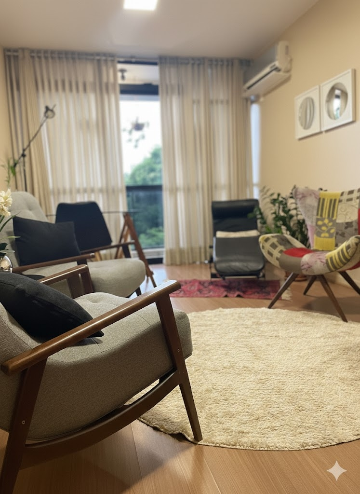

Psicoterapia para mulheres que vivem a maternidade com culpa, medo ou solidão e desejam viver esse papel com mais leveza e propósito.
- • Dê lugar ao que você sente: A maternidade não é fácil ou intuitiva, e tudo bem sentir isso.
- • Não caminhe sozinha: Um espaço seguro para dividir as dificuldades e pesos dessa grande transformação.
- • Maternidade real e possível: Descubra como viver o seu papel de mãe sem a cobrança da perfeição.
- • Resgate a sua identidade: Reencontre a mulher que existe por trás da mãe, integrando sua história.

play_circlePsicologia para o maternar e orientação para pais, com foco em uma jornada real e possível.
Aqui, você encontra um espaço seguro, ético e sem julgamentos para compreender as transformações da maternidade e construir um caminhar mais consciente e leve.
Psicoterapia Perinatal
Para mulheres que atravessam a gestação, o pós-parto ou o luto, oferecendo sustento para as mudanças que acontecem no corpo e na alma.
Apoio ao Maternar e Puérperio
Quando a maternidade se torna solitária ou exaustiva. Vamos dar lugar ao que você sente e integrar sua nova identidade de mulher e mãe.
Pré-natal Psicológico
Um acompanhamento emocional preventivo para gestantes que desejam se preparar para o parto e a chegada do bebê com mais estabilidade e consciência.
Orientação Parental
Um espaço de cuidado para mães e pais que buscam educar com mais firmeza, menos culpa e maior alinhamento com seus próprios valores.
Como funciona meu trabalho na terapia
Preparo na gestação
Um acompanhamento emocional para você se preparar para o parto e a chegada do bebê com mais estabilidade e consciência.
Pós-parto
Acompanhamento preventivo para gestantes que desejam se preparar emocionalmente para o parto e o pós-parto, reduzindo riscos de depressão e fortalecendo o vínculo com o bebê.
Escuta do Maternar
Um espaço seguro para você dar lugar às suas ambivalências, medos e descobertas, reconciliando a mulher que você foi com a mãe que está emergindo.
Saúde Mental
Acompanhamento especializado para lidar com a ansiedade, o baby blues ou o luto, para que você tenha suporte profissional durante esse período de mudanças emocionais.
Orientação Parental Consciente
Trabalhamos de forma estruturada para que você possa educar com mais clareza e menos culpa, encontrando caminhos que façam sentido para a realidade da sua família.
Relatos de quem já viveu esse processo
"Eu cheguei exausta, tentando ser a mãe perfeita que li nos livros. Mas daí eu encontrei a Luciana ❤️, eu consegui finalmente entender que ser uma 'mãe possível' é o maior gesto de amor que eu poderia ter comigo e com meu filho. Isso me livrou de tanto peso, tanta cobrança. Obrigado, Lu!"
"Passei anos tentando ser mãe, anos... Foi o momento, que eu e meu esposo passamos, mais solitário das nossas vida. A cada pergunta: 'E aí, o filho vem quando?', 'Já passou da hora!'. A nossa angústia só aumentava. Mas com a Lu eu encontrei não só uma profissional excelente, mas alguém que me acolheu e entendeu o que eu estava passando."
"A orientação da Luciana me deu a segurança que eu precisava para educar os meus filhos com consciência. Aprendi a sustentar minhas decisões com firmeza, mas com muito mais leveza e amor."
"O pré-natal psicológico me fez enxergar coisas que eu nunca pensei que iria viver... Pude olhar com carinho e cuidado para os meus medos sem pressa e me preparar para o parto de forma inteira, muito mais presente."
"Sabe aquele lugar de escuta séria para falar das sombras da maternidade que ninguém comenta? Encontrei isso na terapia. Saio de cada sessão me sentindo mais enraizada e capaz de lidar com a vida real."

Olá, sou Luciana Rocha.
Sabe, eu não vejo a psicologia apenas como uma ciência, mas como um encontro no qual você pode se reinventar em cada fase. Acredito que, quando encontramos aceitação e direcionamento, a vida floresce, e a maternidade ganha o espaço que merece em nossas vidas.
Nossa jornada será feita de muita escuta e apoio ao seu maternar. Partiremos em busca de ressignificar e encontrar os sentidos que você dá a essa transformação tão profunda. Entendo que o nascimento de um filho e de uma mãe pode ser assustadoramente solitário se não houver um espaço seguro para falar a verdade sobre os seus sentimentos.
Acadêmico
Psicóloga perinatal, há 20 anos.
Mestre em Psicologia Clínica e Cultura.
Habilitação
CRP.: 01/11.343
Conselho Regional de Psicologia